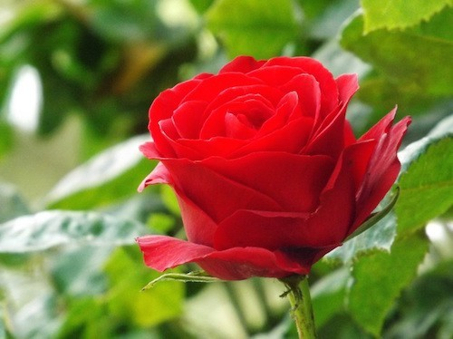
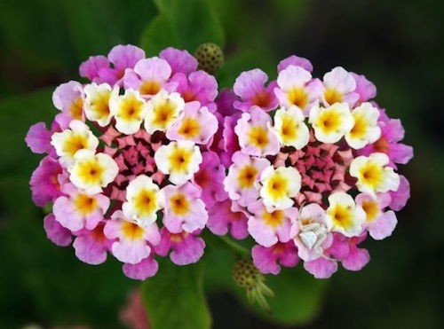
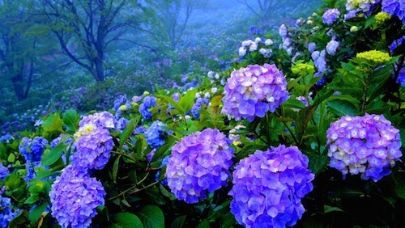

Mairu WEB
Bootstrap< Example
10. ดอกไม้ที่ขึ้นชื่อว่า “สวยงามที่สุดในโลก”
10.ดอกกุหลาบ(Rose)

เป็นดอกไม้ที่ได้รับความนิยมปลูกมากที่สุดชนิดหนึ่งของโลกที่มีต้นกำเนิดจากทวีปเอเชีย
ผู้คนนิยมปลูกเพื่อความสวยงาม ตกแต่งสวน, ประดับตกแต่งบ้าน, ประดับสถานที่, ปลูกเพื่อการพาณิชย์ อาทิ
เพื่อนำไปสกัดน้ำหอม นำไปทำเป็นส่วนประกอบของสปา เป็นต้น
9.ดอกผกากรอง (Lantana)

เป็นพืชพื้นเมืองในทวีปอเมริกา เป็นไม้พุ่มหรือไม้พุ่มกึ่งเลื้อย ปลายใบแหลม ขอบใบจักฟันเลื่อย
เส้นใบเห็นเป็นร่องชัดเจน ดอกเป็นช่อกระจุก มีหลายสี ดอกย่อยเป็นทรงปากแตร ดอกมีกลิ่นฉุน
8.ดอกระฆัง (Blue Bells)
มีถิ่นกำเนิดอยู่ในประเทศอังกฤษ พบมากในช่วงฤดูใบไม้ผลิ ในป่าแถบยุโร
ด้วยรูปทรงระฆังสีน้ำเงินปนม่วงและกลิ่นหอมที่มีเอกลักษณ์
จึงไม่แปลกที่ดอกบลูเบลจะเป็นดอกไม้สวยงามอันดับต้นๆของโลก
ดอกบลูเบลจะดูสวยมากๆเมื่อมันออกดอกพร้อมกันหรือขึ้นอยู่รวมๆกัน
7.ดอกโลหิตแห่งหัวใจ (Bleeding Heart)
ชื่อมาจากลักษณะการออกดอกคือเมื่อดอกผลิใหม่ ๆ ยังตูม ๆอยู่ที่ปลายแหลมของหัวใจด้านล่าง
จะมีติ่งรูปร่างคล้ายหยดน้ำ มีสีแดง ๆ ดูเหมือนหยดเลือด
เมื่อดอกเริ่มบาน ตัวหยดจะเปิดออกให้เห็นไส้สีขาว ๆ อยู่ข้างใน จะเห็นหยดน้ำไหลออกมาจากหัวใจแทน
6.ดอกซูซานตาดำ (Black Eyed Susan)
เป็นไม้พุ่มเช่นเดียวกับดาวกระจาย ดอกมีสีเหลืองเจิดจ้า เกสรเป็นลูกกลมสีน้ำตาลเข้มเหมือนดวงตา
ลักษณะโดยทั่วไปของดอก จะคล้ายกับดอกในตระกูลเดซี่มาก จึงมีอีกชื่อหนึ่งว่า Gloriosa Daisy มีก้านที่ยาว
จึงนิยมตัดมาปักแจกัน หรือจัดเข้าช่อดอกไม้ด้วย เป็นไม้ดอกไม้ประดับที่น่าสนใจอีกชนิดหนึ่ง
5.คาลล่า ลิลลี่ (Calla Lily)
มีถิ่นกำเนิดจากทวีปแอฟริกา ถูกยกย่องว่าเป็นดอกไม้สำหรับการเฉลิมฉลองมาตั้งแต่ยุคโรมัน
มีความงามแบบเรียบง่าย ด้วยรูปทรงของดอกที่มีเอกลักษณ์
ปัจจุบันดอกคาร่าลิลลี่เป็นดอกไม้ที่นิยมมากสำหรับงานแต่งงาน
4.ดอกไฮเดรนเยีย (Hydrangea)

เป็นดอกไม้จากต่างประเทศแต่รู้จักกันมานานแล้วในประเทศไทย
ปัจจุบันเป็นดอกไม้ที่แพร่หลายในประเทศไทย และเป็นที่นิยมของนักจัดสวน
รวมทั้งนิยมนำมาประดับในงานแต่งงาน
3.ดอกปักษาสวรรค์ (Bird of paradise)
ต้นไม้ดอกที่มีรูปทรงและสีสันงดงามโดดเด่นคล้ายนกชนิดหนึ่ง
จึงถูกตั้งชื่อโดยใช้ชื่อนกชนิดนั้นโดยตรงนั่นคือ ต้นปักษาสวรรค์
ซึ่งมาจากชื่อของนกที่ชื่อปักษา-สวรรค์ หรือ Bird of Paradise นั่นเอง
2.ดอกพุทธรักษา (Canna indica)
ถูกพบครั้งแรกในหมู่เกาะเวสอินดี้และแถบอเมริกาใต้
ซึ่งถูกนำมาพัฒนาเป็นไม้ประดับ และขยายพันธุ์ให้ดีขึ้นโดยชาวยุโรป
และเมื่อสักประมาณกว่าร้อยปีก่อนดอกพุทธรักษาเป็นดอกไม้ที่
ได้รับความนิยมเป็นอย่างมาก โดยนำไปปลูกเพื่อตกแต่งสวน
1.ดอกซากุระ (Cherry Blossom)
มีถิ่นกำเนิดในจีนตอนใต้, เกาะไต้หวัน, หมู่เกาะโอกินาวา, ญี่ปุ่น มีดอกสีขาว
กลีบแต่ละกลีบมีจำนวนแตกต่างกันไปตามชนิด ลักษณะเด่นของซากุระก็คือ เมื่อร่วง จะร่วงพร้อมกันหมด
ซากุระจึงเป็นสัญลักษณ์ของความเป็นทหารและวิถีความเป็นบูชิโดของญี่ปุ่น
ที่มา : http://www.wegointer.com/2015/07/top-10-most-beautiful-flowers-in-the-world